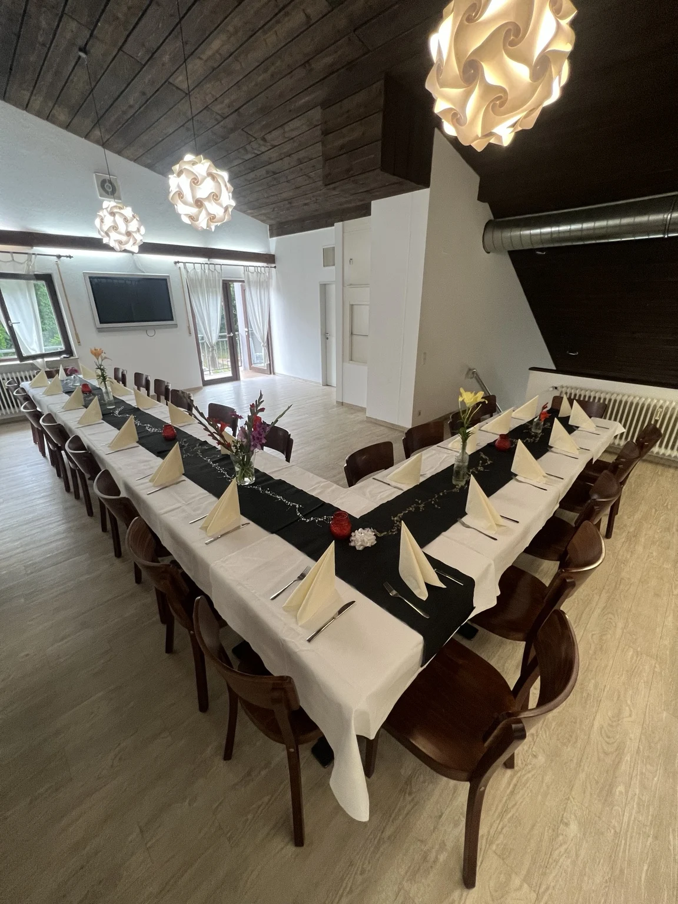

Ihr privater Feierraum
Besondere Menschen.
Besondere Momente.
Ihr Anlass verdient einen eigenen Rahmen: Feiern Sie im separaten Raum im Obergeschoss unseres Restaurants in Weil am Rhein – mit bis zu 35 Personen.

Gemeinsam genießen
Ein Raum für
Ihre Geschichte.
Ein runder Geburtstag, ein Familienfest, ein Jubiläum oder einfach ein Wiedersehen: Unser privater Veranstaltungsraum bietet Ihnen die Möglichkeit, gemeinsam zu essen und Zeit miteinander zu verbringen.
Auch für Firmenfeiern, Weihnachtsessen, Teamabende und Meetings mit anschließendem Essen ist der separate Raum eine schöne Möglichkeit. Die Anordnung der Tische und die Auswahl der Speisen besprechen wir passend zu Ihrem Anlass.
Von italienischen Vorspeisen über Pasta, Pizza und Fleischgerichte bis zum süßen Abschluss: Gemeinsam stimmen wir ab, was zu Ihrer Feier passt. Details, Verfügbarkeit und Konditionen nach Absprache.
Lassen Sie uns planen
Was gibt es zu feiern?
Nennen Sie uns Ihren Wunschtermin, die Personenzahl und den Anlass.
Wir besprechen alles Weitere persönlich mit Ihnen.